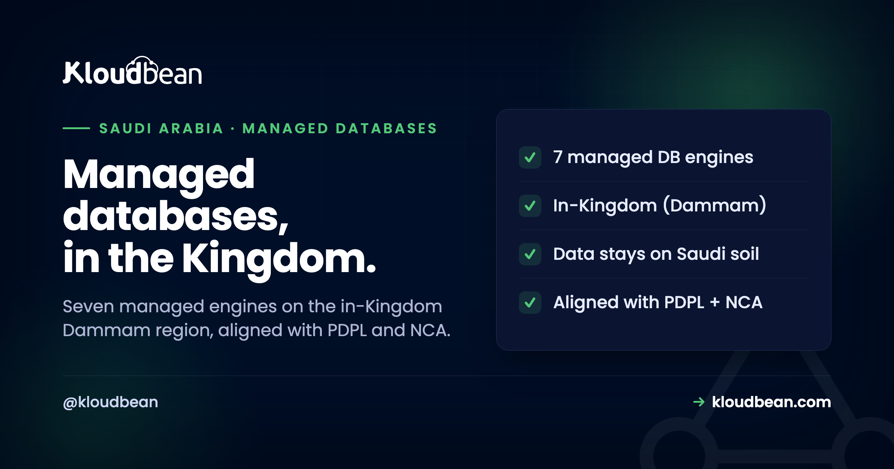

Managed Databases With Saudi Data Sovereignty: Your Data, In-Kingdom

For a Saudi organisation, the database is where the regulated data actually lives, so two questions decide almost everything: who operates it, and where does it physically sit? Plenty of managed-hosting platforms answer the first, they will run your database for you, but not the second, because they have no presence inside the Kingdom, so your data ends up in Frankfurt or Virginia. Kloudbean is built to answer both at once: fully managed databases that run in-Kingdom, on the Dammam region, so a team keeps the database healthy while the data stays on Saudi soil. This guide is about that pairing, the distinction it rests on, and, honestly, where it stops.
Yes. Kloudbean runs fully managed databases in-Kingdom on Google Cloud's Dammam region (me-central2), so the data stays on Saudi soil while the platform handles provisioning, patching, backups, and access control. It offers seven managed engines, MySQL, MariaDB, PostgreSQL, Redis, Memcached, Elasticsearch, and MongoDB, all from one dashboard with automatic backups. That combination is unusual: it is one of the only managed-cloud platforms that brings fully managed databases and in-Kingdom data sovereignty together, since most managed-hosting providers have no Saudi region at all. It is aligned with PDPL and NCA expectations rather than certified, and the honest boundary holds: the platform runs the database, while your application, your data classification, and your obligations as data controller stay yours.
Residency and sovereignty: the distinction that decides this
These two words get used interchangeably, and for a Saudi compliance conversation that is a mistake, because they answer different questions.
Data residency is about location: where, physically, the bytes sit. A database with residency in Saudi Arabia stores its data on servers inside the Kingdom. Data sovereignty goes further, to jurisdiction: which country's laws govern that data, and who can compel access to it. Data can be resident in one country but subject to another country's legal reach if the operating company or the infrastructure answers elsewhere. For regulated Saudi data, you usually want both: the data physically in-Kingdom, and governed by Saudi law rather than exposed to foreign legal demands. Residency is the foundation, and running the data in-Kingdom on infrastructure operated to Saudi expectations is how you build the sovereignty story on top of it. When you evaluate any provider, ask both questions, not just the first, because "we can host your database" is not the same promise as "your database and its data stay in the Kingdom."
The seven managed engines, all in-Kingdom
Data sovereignty is only useful if the database you need is actually on offer, so breadth matters here.
Kloudbean provides seven managed database engines, which covers the overwhelming majority of what applications actually run: MySQL, MariaDB, PostgreSQL, Redis, Memcached, Elasticsearch, and MongoDB. Each is a one-click provision rather than a server you assemble and harden by hand, each comes with automatic backups, and each is managed from the same dashboard as your servers and storage. That means a Saudi team can run a relational database, a cache, and a search engine, all in-Kingdom, without stitching together separate providers or leaving the data-residency story to chance on any one of them. The point of listing all seven is simple: sovereignty should not force you onto a single database you did not want. Whatever the application needs, the managed version of it can run inside the Kingdom.
In-Kingdom by running on the Dammam region
The residency comes from a concrete, verifiable place, which matters because vague "somewhere in the region" claims do not satisfy anyone serious.
Kloudbean runs in-Kingdom workloads on Google Cloud's Dammam region, me-central2, which is a Google Cloud region physically located in Saudi Arabia. When you provision a managed database there, the data, and its automatic backups, live inside the Kingdom rather than being shipped to Europe or North America the way a provider with no Saudi presence must. That is the difference between a residency promise you can point to and a hand-wave. It also means the latency story is good for Saudi users, since the data sits close to them, though the reason most teams care is compliance, not milliseconds. The broader picture of in-Kingdom hosting is in cloud hosting in Saudi Arabia, and the region specifics are in the Dammam region guide; this article is about the database layer specifically.
Why managed and in-Kingdom rarely come together
Here is the honest market picture, and it is the reason this pairing is worth calling out rather than assuming.
Managed-hosting platforms are good at the "we run it for you" part: provisioning, patching, backups, a friendly dashboard. But most of them run on a handful of regions in Europe and North America and have no presence in Saudi Arabia at all, so they simply cannot keep your data in-Kingdom, no matter how good the management is. Meanwhile the hyperscalers do have Saudi regions, but using them raw means you operate the database yourself, back to assembling and hardening it by hand. Kloudbean sits in the gap: it is one of the only managed-cloud platforms that brings fully managed databases and in-Kingdom data sovereignty together in one dashboard. If you are comparing managed platforms and residency is a requirement, that gap is the whole point, and it is a fair thing to test any provider against; our managed-cloud alternatives comparison is a reasonable place to see how the options actually differ on Saudi presence.
How this maps to PDPL and NCA, honestly
This is where care matters, because the line between "helps you comply" and "makes you compliant" is exactly where credibility is won or lost.
Saudi Arabia's Personal Data Protection Law (PDPL) and the NCA's cybersecurity controls both push regulated data toward staying in-Kingdom and being handled under proper controls. Running your managed databases in the Dammam region directly supports the data-localisation side of that: the personal data is resident in Saudi Arabia, and its backups are too. Managed access controls, private database access, and automatic backups line up with the kinds of technical controls the NCA frameworks describe. But be precise about what that means. In-Kingdom managed databases are aligned with PDPL and NCA expectations and they support your compliance; they do not, on their own, make you compliant, and no honest provider claims a database is PDPL-certified. Compliance is assessed against your whole organisation. The platform gives you the infrastructure half, residency, controls, evidence, and you own the rest.
The honest boundary
Worth stating plainly, because for regulated data the boundary is the credibility.
What the platform covers: provisioning the database engine, patching it, keeping it on a private network, backing it up automatically, and keeping all of that in-Kingdom. What stays yours: your application and its code, classifying which data is sensitive, the data-subject rights and lawful-basis obligations you carry as the data controller under PDPL, and engaging the regulator for any formal assessment. Compliance here is shared, and the split is not a limitation to gloss over, it is the accurate picture. A managed, in-Kingdom database removes a large, genuinely hard piece of the puzzle, the residency and the database operations, so you can spend your effort on the application-level and governance obligations that only you can meet. Anyone promising more than that, a database that "makes you PDPL compliant" by itself, is selling you something that does not exist.
How to launch one
The practical part is refreshingly ordinary, which is the point of managed.
In the dashboard you provision a managed database, choose the engine your app needs, and select the in-Kingdom Dammam region so the data lands on Saudi soil from the first byte. Automatic backups come with it and stay in-Kingdom too. You connect your application over the private network rather than a public IP, following the same least-privilege access described in database private access control, and you are running a managed, in-Kingdom database without having installed, tuned, or hardened anything by hand. The general mechanics of adding a database to an app are in adding a managed database; the only Saudi-specific decision is choosing the Dammam region.
Related reading
This is the database layer of the wider Saudi story: start with cloud hosting in Saudi Arabia, and the concepts behind it in data residency in Saudi Arabia and the GCP Dammam region guide. For the compliance frameworks, PDPL-compliant hosting and the NCA CSCC guide. For who operates what, managed hosting in KSA, and for the database engines themselves, adding a managed database.
Managed databases that stay in the Kingdom.
Run MySQL, PostgreSQL, MongoDB, Redis, and more as fully managed databases in the in-Kingdom Dammam region, with automatic backups and one dashboard for your whole stack. Aligned with PDPL and NCA expectations. See how managed platforms compare on Saudi presence in managed-cloud alternatives, or start at kloudbean.com; verify current details on pricing.
Seven managed engines · In-Kingdom Dammam region · Automatic backups · One dashboard
FAQ
What is the difference between data residency and data sovereignty in Saudi Arabia?
Data residency is about physical location, whether the data sits on servers inside Saudi Arabia. Data sovereignty goes further, to which country's laws govern the data and who can compel access to it. Data can be resident in one country but still exposed to another country's legal reach. For regulated Saudi data you usually want both: the data physically in-Kingdom and governed under Saudi law, which is what running managed databases in the Dammam region is designed to support.
Which managed databases can run in-Kingdom on Kloudbean?
All seven of Kloudbean's managed engines: MySQL, MariaDB, PostgreSQL, Redis, Memcached, Elasticsearch, and MongoDB. Each is a one-click provision with automatic backups, managed from the same dashboard as your servers and storage, and each can run in the in-Kingdom Dammam region. That breadth means data sovereignty does not force you onto a single database, since a relational database, a cache, and a search engine can all run inside the Kingdom.
Where exactly is the data stored?
In-Kingdom workloads run on Google Cloud's Dammam region, me-central2, which is a Google Cloud region physically located in Saudi Arabia. When you provision a managed database there, both the data and its automatic backups stay inside the Kingdom, rather than being shipped to a European or North American region as they would be with a provider that has no Saudi presence. That gives you a concrete, verifiable location rather than a vague regional claim.
Does an in-Kingdom managed database make me PDPL compliant?
No, and any provider claiming otherwise is overstating it. Running managed databases in-Kingdom directly supports the data-localisation side of PDPL and aligns with NCA expectations, and it provides technical controls like private access and backups. But compliance is assessed against your whole organisation, including how you handle data as controller, your lawful basis, and data-subject rights. The platform gives you the infrastructure half; it is aligned with the frameworks and supports compliance rather than delivering it on its own.
Is Kloudbean the only provider offering this in Saudi Arabia?
It is one of the only managed-cloud platforms that brings fully managed databases and in-Kingdom data sovereignty together in one dashboard. The hyperscalers do run databases in Saudi regions, but using them raw means operating the database yourself, and most managed-hosting platforms have no Saudi presence at all, so they cannot keep data in-Kingdom. Kloudbean sits in that gap, combining the managed experience with in-Kingdom residency, which is an unusual pairing rather than a universal one.
Do the backups also stay inside Saudi Arabia?
Yes. When a managed database runs in the in-Kingdom Dammam region, its automatic backups are kept in-Kingdom as well, which matters because backups are a common place data quietly leaves the country. Keeping the backups resident is part of an honest residency story, since a database that is in-Kingdom but backed up abroad has not really kept the data on Saudi soil. Residency has to cover the copies, not just the primary.
What does managed mean here, and what stays my responsibility?
Managed means the platform provisions the database engine, patches it, keeps it on a private network, and backs it up automatically, all in-Kingdom, so you do not install or harden it by hand. What stays yours is your application and its code, deciding which data is sensitive, your obligations as data controller under PDPL, and engaging the regulator for any formal assessment. Compliance is shared: the platform provides the infrastructure controls, and the governance and application layers remain your responsibility.
How is this different from just using a hyperscaler's Saudi region?
A hyperscaler gives you the in-Kingdom region but expects you to operate the database yourself: provisioning, tuning, patching, hardening, and backups all become your job. Kloudbean runs on that same class of in-Kingdom infrastructure but delivers the database as a fully managed service from one dashboard, so you get residency and sovereignty without the operational burden. It is the difference between renting the raw region and getting a managed database that happens to live inside the Kingdom.